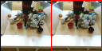
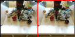
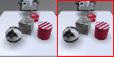
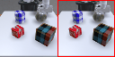
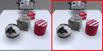
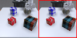

iVideoGPT
Architecture
iVideoGPT is a generic and efficient world model architecture: (a) Compressive tokenization utilizes a conditional VQGAN that discretizes future frames conditioned on context frames to handle temporal redundancy, reducing the number of video tokens asymptotically by 16x. (b) An autoregressive transformer integrates multimodal signals—visual observations, actions, and rewards—into a sequence of tokens, enabling interactive agent experience through next-token prediction.
Pre-training & Fine-tuning

iVideoGPT is scalable for action-free video pre-training on a mixture of 1.5 million robotic and human manipulation trajectories. The pre-trained iVideoGPT serves as a versatile foundation that can be adapted into interactive world models for various downstream tasks. These include action-conditioned video prediction, visual planning, and visual model-based RL.
 


 


